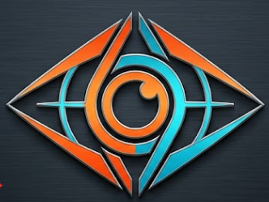
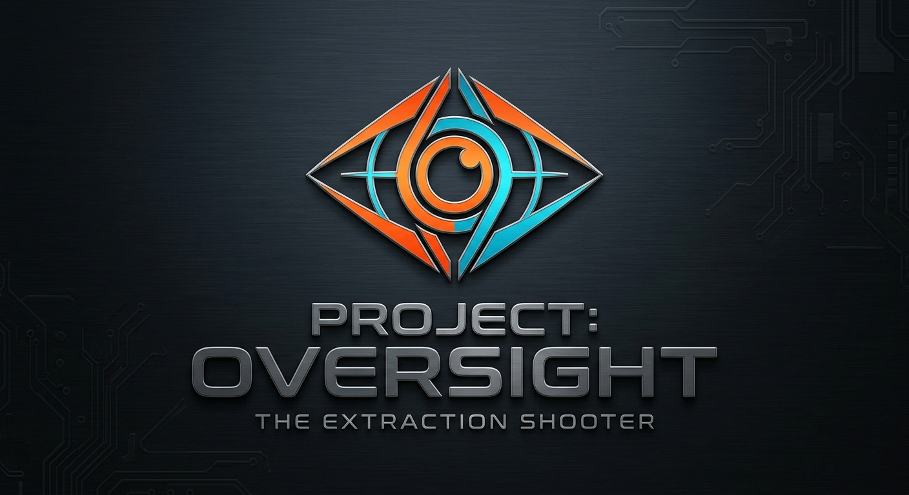

PVEVP Tattico ad Alta Tensione
Affronta sia le letali pattuglie robotiche dell'Oversight sia le squadre di Raiders rivali pronte a rubare il tuo bottino.

L'extraction shooter tattico multiplayer di nuova generazione

La Terra è sotto la morsa dell'Oversight, un'intelligenza artificiale orbitale che pattuglia i cieli. Unisciti a una squadra di tre Raiders, scendi nelle zone contaminate e recupera la tecnologia perduta prima dell'estrazione.
Affronta sia le letali pattuglie robotiche dell'Oversight sia le squadre di Raiders rivali pronte a rubare il tuo bottino.
Invia il segnale ai droni di recupero per trarre in salvo il tuo equipaggiamento prima che scada il tempo di missione.